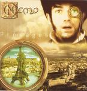

| Artist: | Nemo |
| Title: | Présages |
| Label: | Quadrifonic Quad-06-03 |
| Length(s): | 60 minutes |
| Year(s) of release: | 2003 |
| Month of review: | [12/2004] |
| 1) | La Dernière Vague | 14.01 |
| 2) | Générateur | 4.46 |
| 3) | Sur La Tombe De Phoenix | 9.56 |
La Mort Du Scorpion
| 4) | Soleil | 1.15 |
| 5) | L'Oeil Du Cyclope | 5.59 |
| 6) | La Mort Du Scorpion | 7.40 |
Les Nouvelles Croisades
| 7) | Cavalerie | 3.34 |
| 8) | Confrontation | 5.43 |
| 9) | Désolation | 2.16 |
| 10) | Danse Des Mortes | 2.34 |
| 11) | Renaissance | 6.36 |
Although Générateur, starts out heavy enough, this song does have many elements of prog, although the guitars stay heavy throughout. In between we get some classically oriented keyboardsolo's. Then againm the vocal parts are rather up-beat and catchy.
Sur La Tombe De Phoenix is another rather lengthy piece, and the last one before we move onto the multi-parted epics. Marimba opens this one, in a somewhat Middle-eastern fashion. Some nice tension building in this one, dark moody atmospheres, but also keyboards mimicking a string orchestra. The vocals are rather dreary sounding, but at times the rock sets in, and the bombast rises. In this the band can also be likened to Arena, or Egdon Heath with Maurits Kalsbeek. The drummer has plenty to say in this one, adding plenty of rolls to the orchestral sound of the keyboardist. The final few minutes I see a leading role for the bass player, accompanying the keyboardist while the guitarist freely intermixes with his heavy chords. Very satisfying.
La Mort Du Scorpion is divided into three parts, in ascending length. The first of these is Soleil, an acoustic vocal track, softly Latin in feel. This takes us to the more pacy L'Oeil Du Cyclope, while the acoustic guitars continue, but now in a more strumming fashion. This is rather friendly sounding, a bit in the direction of compatriots Minimum Vital, frolick and with plenty of vocals (but not chants). In the middle the acoustic guitar playing takes on a more thoughtful timbre, reminiscent of the acoustic side of Spock's Beard. I get the impression the band likes to play around, here. After all this lightheartedness we arrive at the tracks final part, La Mort Du Scorpion. Here, the music is melodic and subdued. Except for the language this could have been Everon in their quiet passages. The marimba and guitar play the leading role in this sinister piece of work, which also refers to the tension present in the work of Ennio Morricone's magnificent spaghetti western scores. This track has it all.
Les Nouvelles Croisades is formed by the last five tracks on this album, well not entirely. The opening part reminds me strongly of a track from Unfolded Like Staircase (do these guys know the song, I wonder?). We continue with off-beat and varied rhythm. This is typical prog. The music is more melodious, thematic and fluent on the second part, Confrontation. Excellent bombast here. We move right into Désolation, which is centred on acoustic guitar, with ethereal vocalizations.
Danse Des Mortes features the Magna Carta brand of progrock/metal with its guitar hero feel and jazzy undertones. A rather cold piece of work and not my favourite. We arrive at the final part, the progmetal of Renaissance. Plenty of bombast and riffing, with a typically movie soundtrack feeling of tension. The melody is good, and the music has an orchestrated feel. Excellent. The music takes a turn here to 'end' with scatlike vocalizations, albeit a bit more melodic than that. The bonus track is glued to this one, a completely vocal Glass Prison rendition, at first as a vocal harmony group, then human beatbox is added to mimick the instruments. Humoristic, but the human beatbox is beyond their talents in my opinion.